Exam weight Low
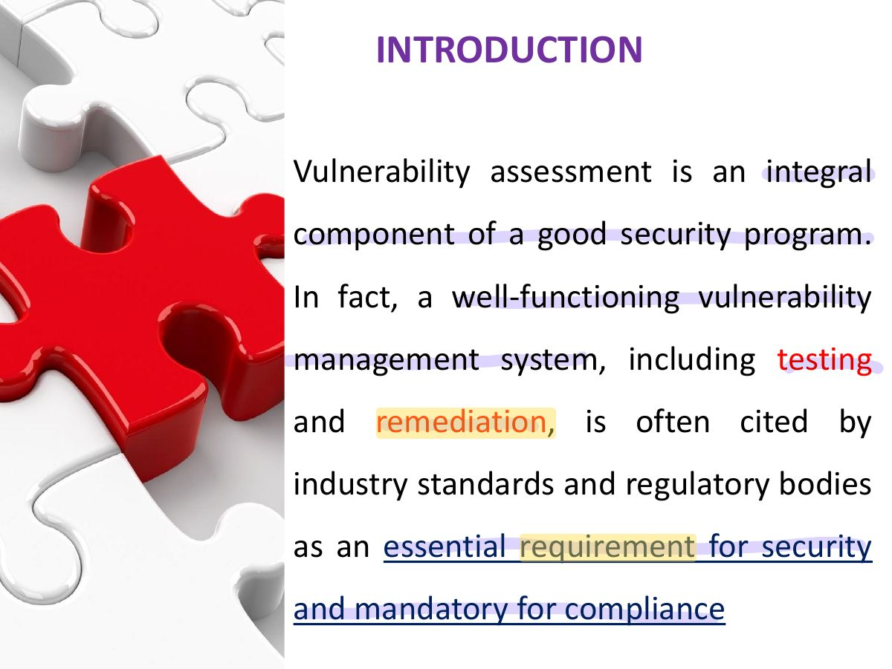
Exam weight ●○○ Low
Traditionally, cyber security professionals are trained to
consider vulnerabilities from a technical perspective, such as flaws identified in software platforms or configuration issues that can be leveraged by an attacker to gain access.
Although, given the definition previously, vulnerabilities encompass weaknesses of all types (including, for example, those found within physical environments and governance structures)
3
Exam weight ●○○ Low
The US National Institute of Standards and
Technology (NIST) defines a vulnerability as:
What Is a
“ a weakness in an information system,
Vulnerability
system security procedures, internal
Assessment?
controls, or implementation that could be exploited by a threat source. ” Thus, a vulnerability is a weakness that can be exploited by adversaries to advance their goals.
4
Exam weight ●○○ Low
An ethical hacker needs to keep up with the most recently discovered
vulnerabilities and exploits to stay one-step ahead of attackers through vulnerability research, which includes:
- Discovering system design faults and weaknesses that might allow attackers to compromise a system.
- Being informed about new products and technologies to find news related to current exploits.
- Checking underground hacking web sites for new vulnerabilities and exploit.
- Checking newly released alerts regarding relevant innovations and product improvements for security systems.
5
Exam weight ●○○ Low
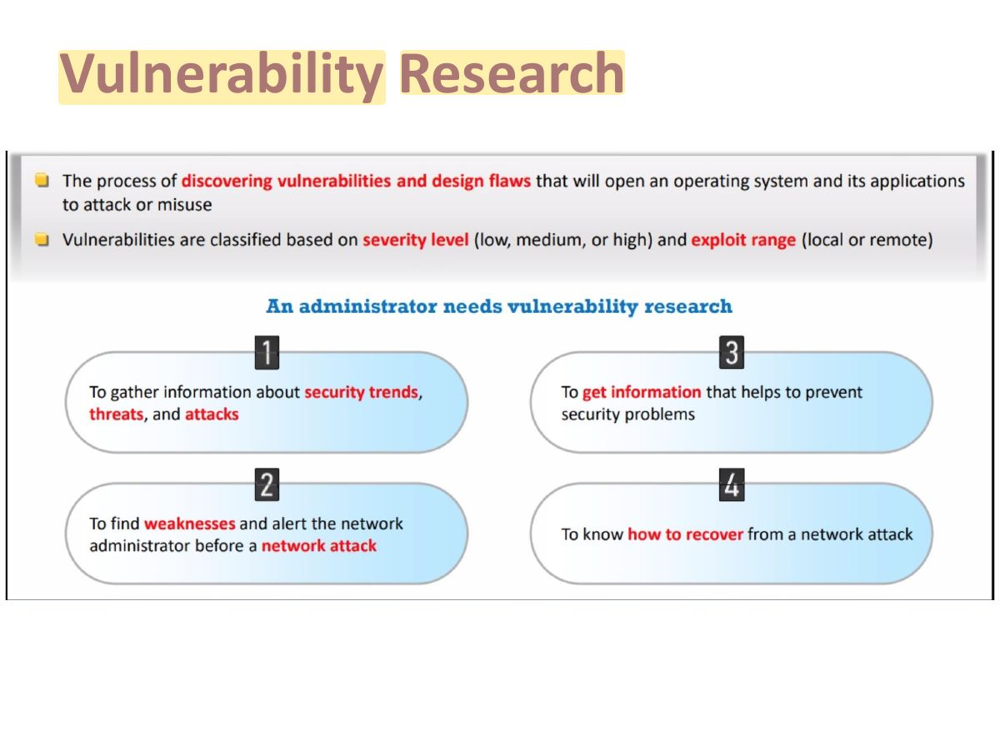
Exam weight ●○○ Low
- Vulnerability research: keep up with newly discovered weaknesses (advisories, CVE, vendor bulletins).
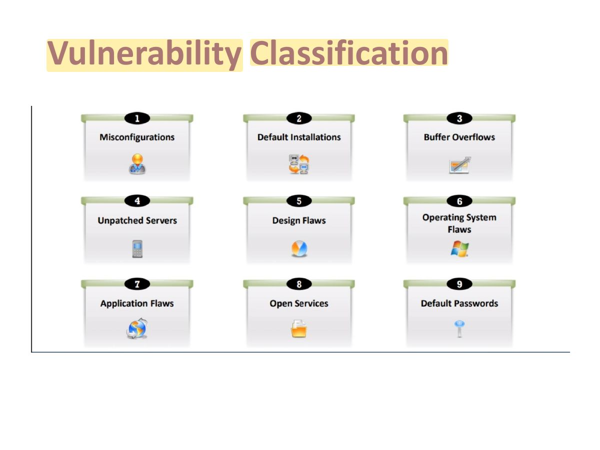
Exam weight ●●● High
- Classes: misconfiguration, default installations, buffer overflows, unpatched servers, design flaws, OS and application flaws, open services, default passwords.
🎯 How this can come up · 1 question
MCQ
Leaving "admin/admin" on a router is which class of vulnerability?
Correct: Default passwords.
Misconfiguration
- Misconfiguration is the most common vulnerability that is mainly caused by human error, which allows attackers to gain unauthorized access to the system. This may happen intentionally or unintentionally affecting web servers, application platform, database and network.
A system can be misconfigured in so many ways such as Disabling security settings and features, Improperly authenticated external systems, Running unnecessary services on a machine etc..
Attackers can easily detect these misconfigurations using scanning tools and then exploit the backend systems. It is important for the administrators to change default configuration of devices and optimize the security of the devices.
8
Exam weight ●○○ Low
Default Installations
- Default installations are usually kept user friendly especially when the device is being used for the first time, as the primary concern is usability of the device rather than the device’s they are connected to networks or systems that have confidential information that would result in a data breach.
- Not changing the default settings while deploying the software or hardware allows the attacker to guess the settings in order to break into the systems.
9
Exam weight ●○○ Low
Buffer Overflows
Buffer overflows are common software vulnerabilities that happen due to coding errors allowing attackers to get access to the target system. In a buffer overflow attack, attackers undermine the functioning of programs and try to take the control of the system by writing content beyond the allocated size of the buffer. Insufficient bounds checking in the program is the root cause because of which the buffer is not able to handle data beyond its limit, causing the flow of data to adjacent memory locations and overwriting their data values. Systems often crash or become unstable or show erratic program behavior, when buffer overflow occurs.
10
Exam weight ●○○ Low
- Buffer overflow: writing more data than a buffer holds overwrites memory and can run attacker code.
Unpatched Servers
- Servers are an essential component of the infrastructure of any organization. There are several cases where organizations run unpatched and misconfigured servers compromising the security and integrity of the data in the system. Hackers look out for these vulnerabilities in the servers and exploit them.
- As these unpatched servers are a hub for the attackers, they serve as an entry point into the network.
- This can lead to exposure of private data, financial loss, discontinuation of operations, etc.
- Updating software regularly and maintaining systems properly by patching and fixing bugs can help in mitigating vulnerabilities caused due to unpatched servers.
11
Exam weight ●○○ Low
Design Flaws
Vulnerabilities that are caused due to design flaws are universal to all operating devices and systems.
Design vulnerabilities such as incorrect encryption or poor validation of data, refer to logical flaws in the functionality of the system that is exploited by the attackers to bypass the detection mechanism and acquire access to a secure system.
12
Exam weight ●○○ Low
Operating System
Flaws Due to vulnerabilities in the operating systems, applications such as Trojans, worms, and viruses pose threats. These attacks are performed by using malicious code, script or unwanted software, which result in loss of sensitive information and loss of control on computer operations. Timely patching of OS, installing minimum software applications and use of applications with firewall capabilities are essential steps that an administrator needs take to protect OS from any attack.
13
Exam weight ●○○ Low
Application Flaws
Application flaws are vulnerabilities in applications that are exploited by the attackers. Applications should be secured using validation and authorization of the user. Applications pose security threats such as data tampering and unauthorized access to configuration stores.
If the applications are not secured, sensitive information may be lost or corrupted. Hence, it is important for developers to understand the anatomy of common security vulnerabilities and develop highly secure applications by providing proper user validation and authorization.
14
Exam weight ●○○ Low
Open Services
Open ports and services may lead to loss of data, DoS attacks and allow attackers to perform further attacks on other connected devices. Administrators need to continuously check for unnecessary or insecure ports and services to reduce the risk on the network.
15
Exam weight ●○○ Low
Default Passwords
- Manufacturers provide default passwords to the users to access the device during initial set-up and users need to change the passwords for future use. However, users forget to update the passwords and continue using the default passwords making devices and systems vulnerable to various attacks such as brute-force, dictionary attack, etc.
- Attackers exploit this vulnerability to obtain access to the system. Passwords should be kept secret; failing to protect the confidentiality of a password allows the system to be compromised with ease.
16
Exam weight ●○○ Low
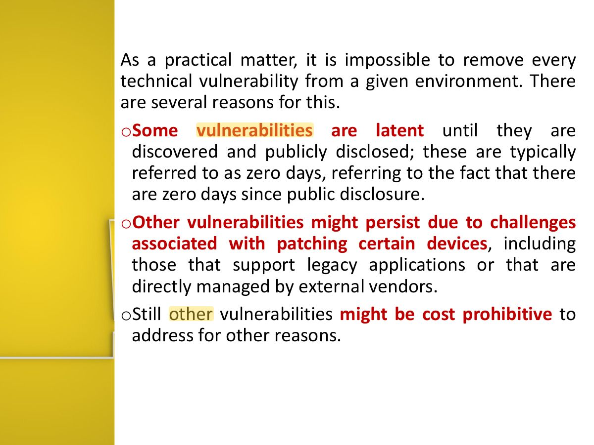
Exam weight ●○○ Low
• This in turn means that any given environment will have multiple
latent vulnerabilities at any given time.
- A vulnerability assessment is the process of identifying and analyzing those security vulnerabilities that might exist in the enterprise.
- Discovery, testing, analysis and reporting of systems and vulnerabilities.
- Manual techniques can also be used to identify technical, physical and governance-based vulnerabilities.
18
Exam weight ●○○ Low
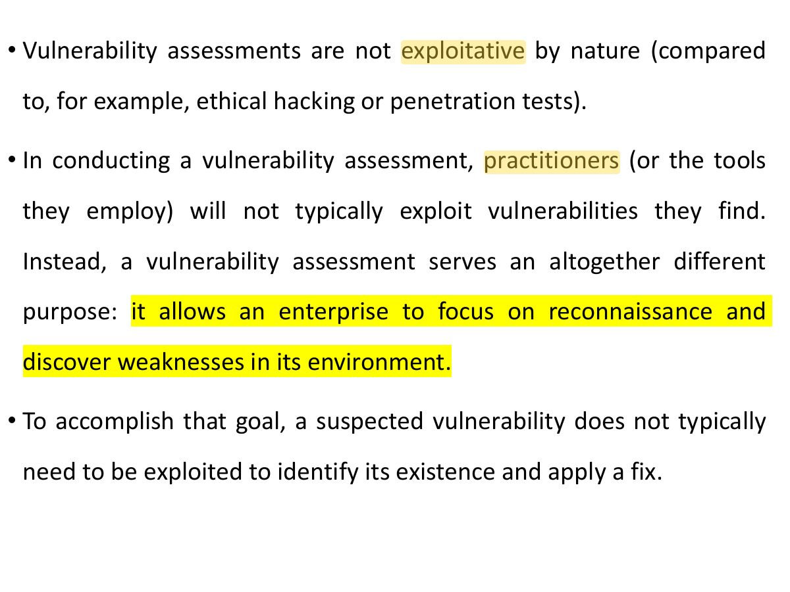
Exam weight ●○○ Low
Types of Vulnerability Assessments
NIST Special Publication 800-115, “Technical Guide to Information Security Testing and Assessment” is a practical guide to techniques for information security testing and assessment. The standard discusses the following four vulnerability assessment activities:
- Network-based scans
- Host-based scans(i.e., system-configuration reviews)
- Wireless scans
- Application scans (included within penetration testing)
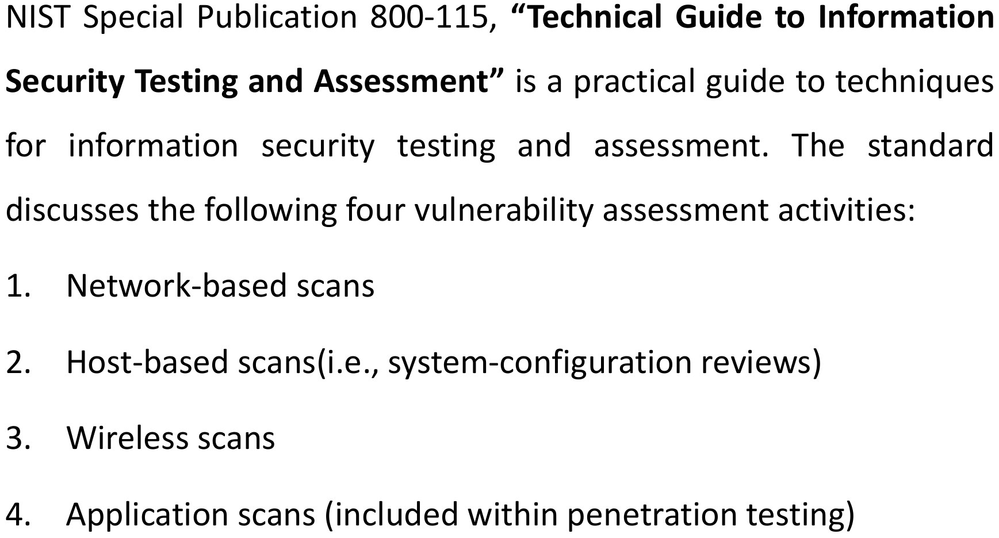
20
Exam weight ●○○ Low
- Assessment types: network-based, host-based, wireless, application scans.
1- Network-Based Scans
- Network assessments determine the possible network security attacks that may occur on an organization’s system. These assessments evaluate the organization’s system for vulnerabilities such as missing patches, unnecessary services, weak authentication, and weak encryption.
- Network assessment professionals use firewall and network scanners such as Nessus. These scanners find open ports, recognize the services running on those ports, and find vulnerabilities associated with these services. These assessments help organizations determine how vulnerable systems are to Internet and intranet attacks, and how an attacker can gain access to important information.
21
Exam weight ●○○ Low
2- Host-Based Scans
- Network-based scans may sometimes miss weaknesses that can be exploited only by a user who is logged onto the system (i.e., local exploits) because they may only have the capability or be configured only to look for “remotely exploitable” vulnerabilities (i.e., those that are accessible from somewhere else on the network).
- Host- based scans, by contrast, are executed from the target computer or are remotely controlled with authenticated account access to the target computer. These scans can provide greater visibility into a system’s configuration settings and patch details, while covering ports and services that are also visible to network-based scans. For this reason, host-based scans are more comprehensive than network-based scans; however, that breadth typically increases their overhead and makes them harder to set up and operate.
22
Exam weight ●○○ Low
2- Host-Based Scans Scope (Cont ... )
23
Exam weight ●○○ Low
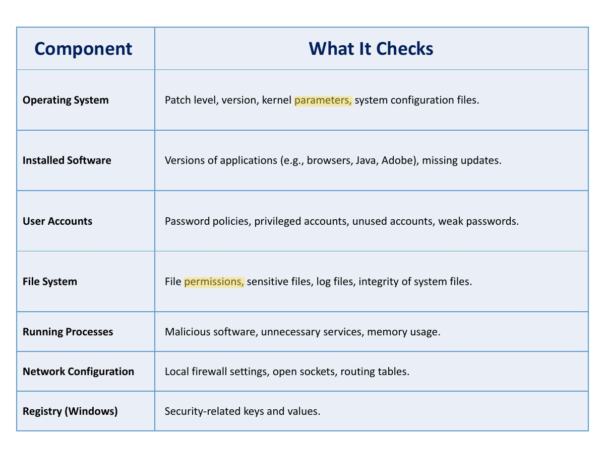
Exam weight ●○○ Low
3- Wireless Network Scans
- Wireless scans of an enterprise’s Wi-Fi networks focus on points of attack in wireless network infrastructure. One aspect of wireless network testing is validating that an enterprise’s networks are securely configured. Although any benefit of disabling SSID broadcast to “hide” a network has long since passed, scanning validates that strong encryption is enabled and default settings are changed.
- Another purpose of wireless testing is to identify rogue access points, which pose as legitimate wireless networks of either an enterprise or a hotspot, such as a local coffee shop, to trick victims into joining an attacker’s network.
25
Exam weight ●○○ Low
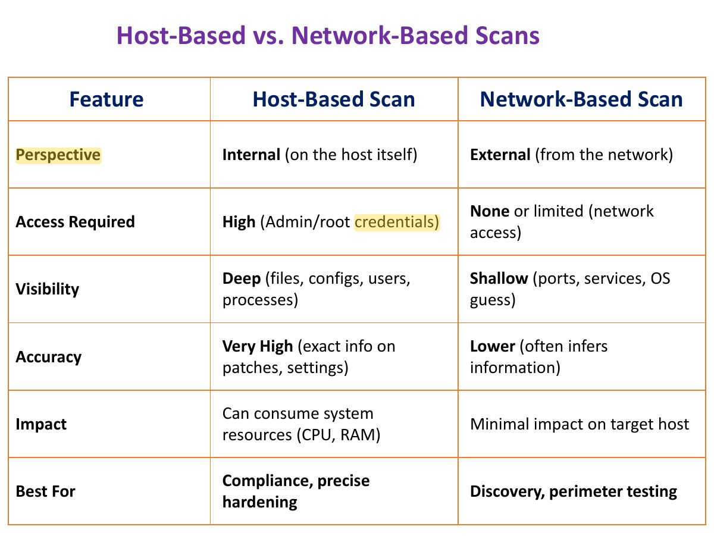
Exam weight ●●● High
- Network-based scans see services exposed over the network; host-based scans (with an agent or credentials) see local config, patches and accounts.
🎯 How this can come up · 1 question
MCQ
Which scan type best finds missing local patches and weak file permissions?
Correct: Host-based.
4- Application Scans
- Application scans typically focus on websites to discover and enumerate software vulnerabilities and misconfigurations.
- Many network vulnerability scanning tools also include web application security tests.
- Application security testing can be risky because scanning software may make changes to databases or delete content during testing, so enterprises should either restrict testing to nonproduction environments or exercise caution in scanning production environments.
27
Exam weight ●○○ Low
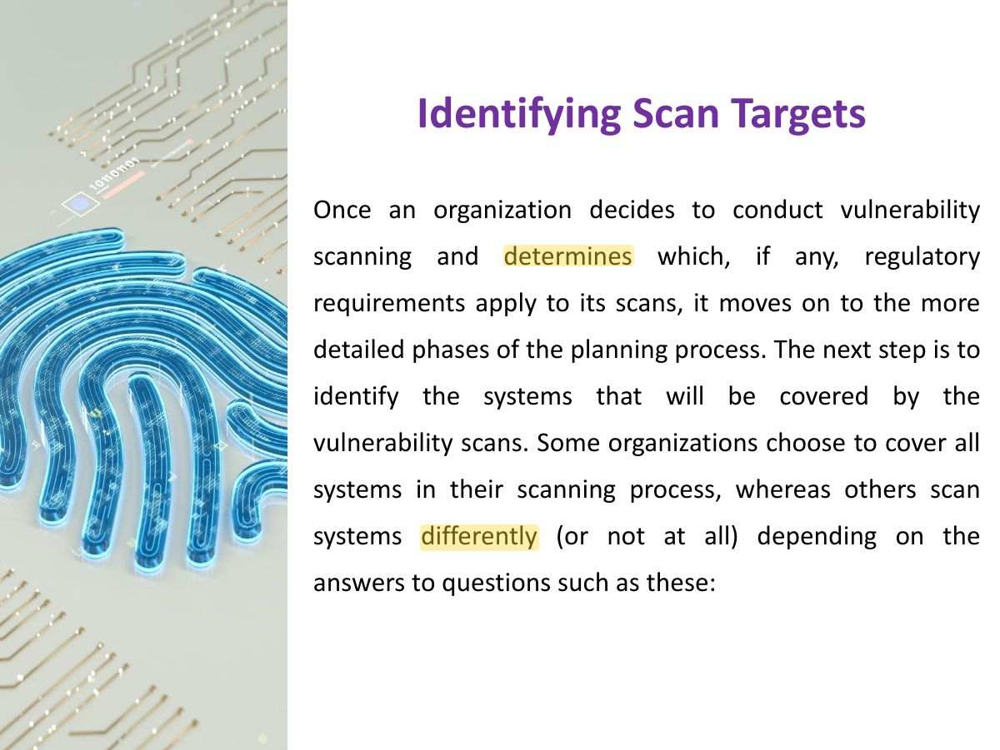
Exam weight ●○○ Low
• What is the data classification of the information stored, processed, or
transmitted by the system?
- Is the system exposed to the Internet or other public or semipublic networks?
- What services are offered by the system?
- Is the system a production, test, or development system?
- Identifying Vulnerability Management Requirements
Organizations also use automated techniques to identify the systems that may be covered by a scan. Cybersecurity professionals use scanning tools to conduct discovery scans that search the network for connected systems, whether they were previously known or unknown, and build an asset inventory.
29
Exam weight ●○○ Low
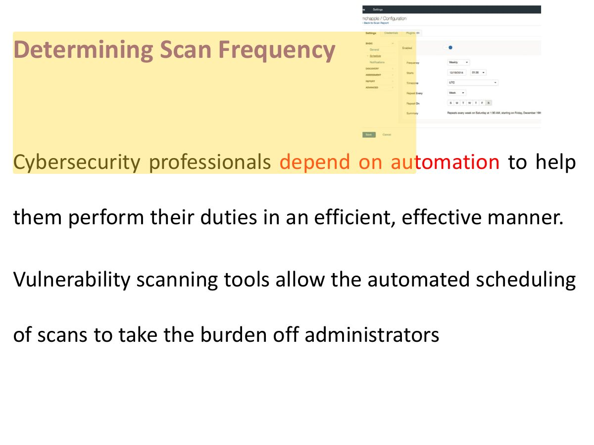
Exam weight ●○○ Low
- Scan frequency depends on risk appetite, regulations (PCI DSS: quarterly), resources and licensing.
What are vulnerability scanners and how do they work?
- Vulnerability scanners scan computers, networks, or applications looking for potential weaknesses that could be used by attackers to compromise the target. The way a vulnerability scanner works is that it probes the system by sending specific data to the target host/network, and based on its analysis of the response (fingerprint) received from the target, it can determine many things such as the following:
- Open ports
- Services
- Operating System
- Vulnerabilities
31
Exam weight ●○○ Low
Pros and Cons of a Vulnerability Scanner
❖ The main advantage of any vulnerability scanner is task automation; it can
automate many tasks such as reconnaissance, port scanning, service, and version detection. This can make your work faster and more effective than doing everything manually.
❖ On the other hand, there are some disadvantages of using a vulnerability scanner.
One of the main disadvantages is that the vulnerability scanners are very loud by nature and can be easily detected since we are sending lots of traffic over the network.
❖ The other problem with a vulnerability scanner is that it can produce lots of false
positives, meaning that it will report vulnerabilities in the target that may not exist in reality. However, it will also report a lot of false negatives, meaning that the scanner would miss or not report the vulnerabilities that actually exist.
32
Exam weight ●●● High
- Scanners are fast and repeatable but give false positives, miss logic flaws and can disrupt systems.
🎯 How this can come up · 1 question
True / False
A clean vulnerability scan proves a system is secure.
False. Scanners miss unknown and logic flaws.
Many organizations find themselves bound by
laws and regulations that govern the ways they store, process, and transmit information. This is
Regulatory
especially true when the organization handles
Environment
sensitive personal information or information belonging to government agencies.
33
Exam weight ●○○ Low
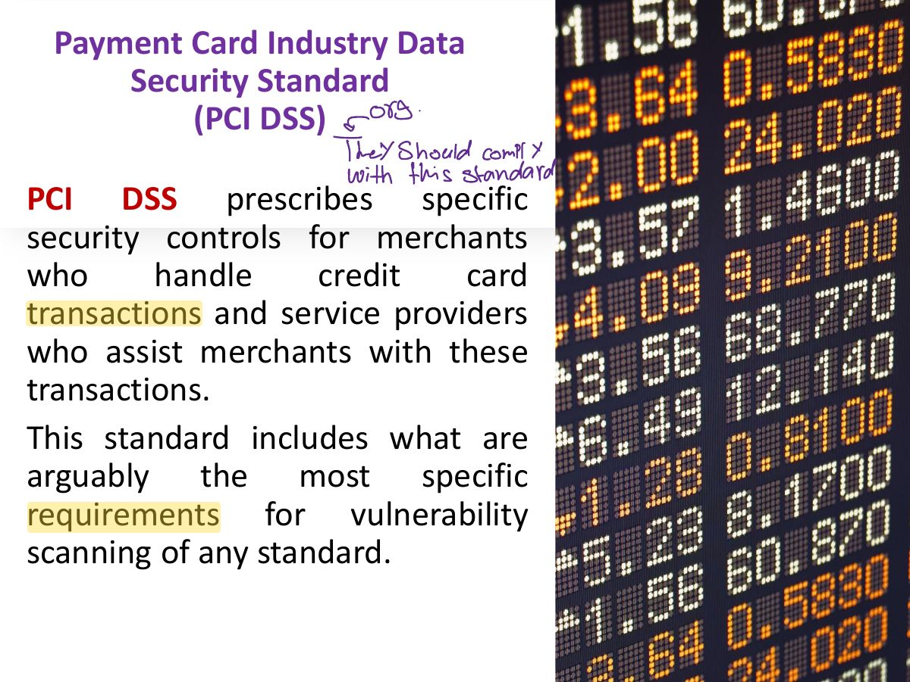
Exam weight ●○○ Low
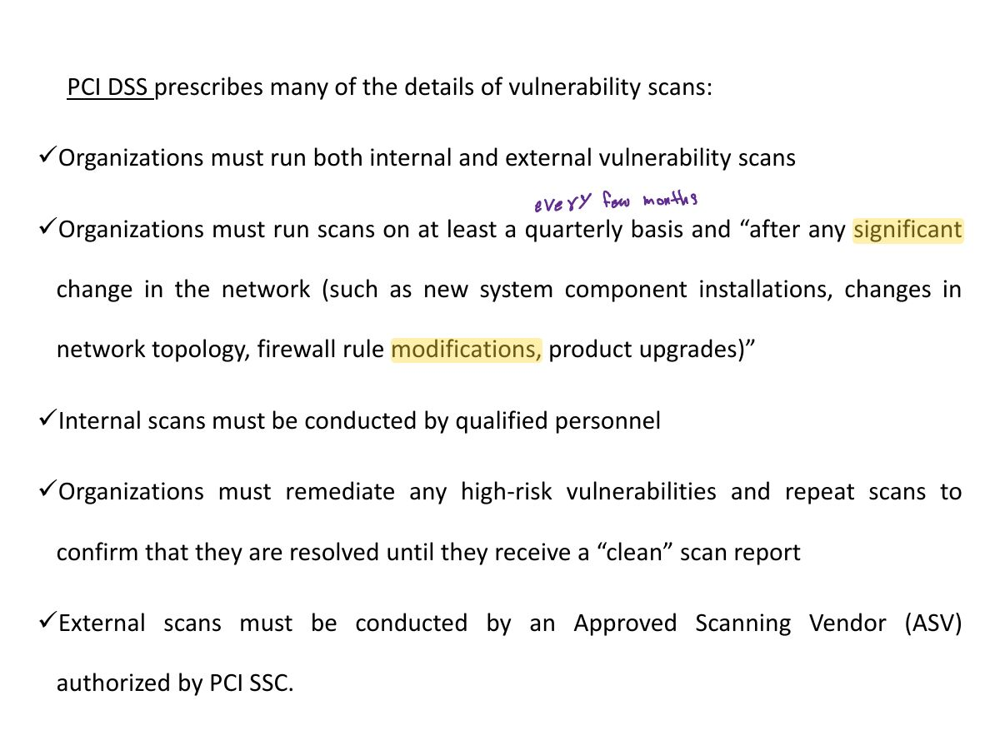
Exam weight ●○○ Low
- PCI DSS (card payments) requires quarterly internal and external scans (external by an Approved Scanning Vendor).
❑ Vulnerability scanning for PCI DSS compliance is a thriving and
competitive industry, and many security consulting firms specialize in these scans.
- Many organizations choose to conduct their own scans first to assure themselves that they will achieve a passing result before requesting an official scan from an Approved Scanning Vendor (ASV) ( ) https://east.pcisecuritystandards.org/assessors_and_solutions/approved_scanning_vendors .
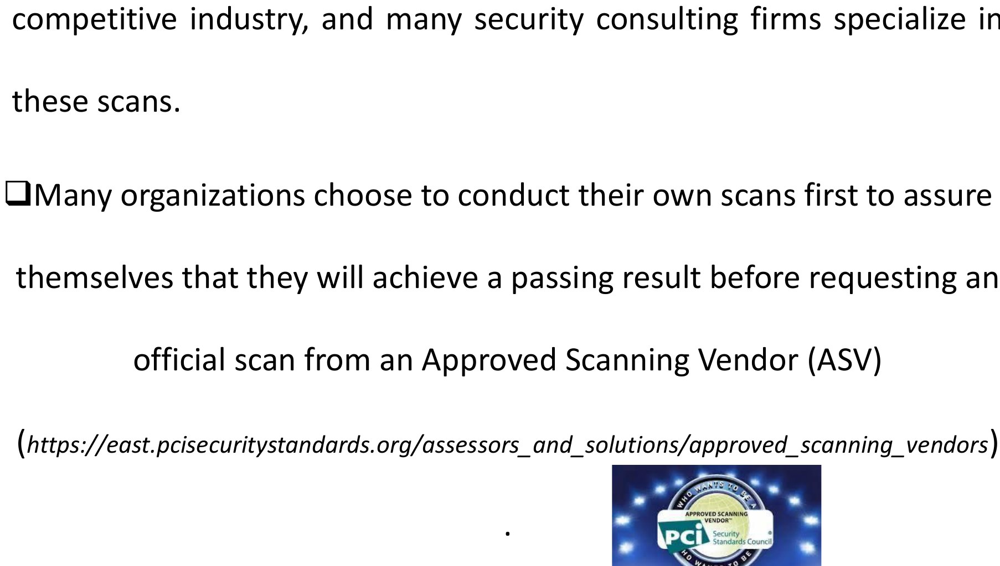
36
Exam weight ●○○ Low
How to Perform Vulnerability analysis?
There are many ways to perform vulnerability analysis, from manually searching through exploit database to fully automatic testing with tools like Open-Vas and Nessus vulnerability scanner.
Vulnerability scanning with automated tools is a very aggressive way of vulnerability scanning as it takes a lot of requests and traffic to complete this kind of scans. In some cases, the great deal of traffic might crash (DOS) target hosts and services, so it is advised to be careful when using these kind of tools.
Beware to only use these vulnerability scans on hosts which you have permission to scan.
When you are using automated tools for vulnerability scanning it is always wise to use multiple tools to rule out false positives. Therefor it is important to also master the manual ways of vulnerability analysis and do not become too reliant on automated scanners
37
Exam weight ●○○ Low
Many of the services contain known vulnerabilities which can be
exploited. The following step is to find out which services are vulnerable and collect information about how they can be exploited. There are several sources which can be used to determine if a service is vulnerable or not.
The most popular and knows sources are:
- exploit-db from Offensive Security and the Open Source Vulnerability Database (OSVDB).
- searchsploit, an offline exploit database included with Kali Linux.
38
Exam weight ●○○ Low
Common Vulnerability Scoring System
39
Exam weight ●●● High
- CVSS scores 0–10 from base, temporal and environmental metric groups.
🎯 How this can come up · 1 question
MCQ
CVSS is used to:
Correct: Score vulnerability severity.
CVSS assessment consists of three metrics for measuring vulnerabilities:
- Base Metrics: It represents the inherent qualities of a vulnerability
- Temporal Metrics: It represents the features that keep on changing during the lifetime of a vulnerability.
- Environmental Metrics: It represents the vulnerabilities that are based on a particular environment or implementation.
- Each metrics sets a score from 1-10, 10 being the most severe.
- CVSS score is calculated and generated by a vector string, which represents the numerical score for each group in the form of a block of a text.
- CVSS calculator is developed to rank the security vulnerabilities and provide the user with overall severity and risk related to the vulnerability
40
Exam weight ●○○ Low
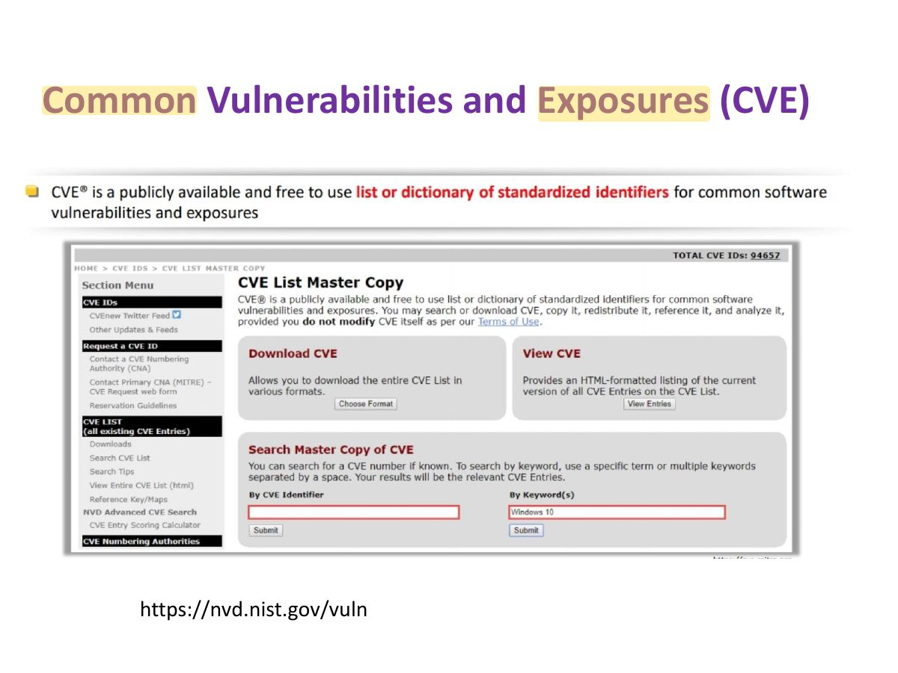
Exam weight ●○○ Low
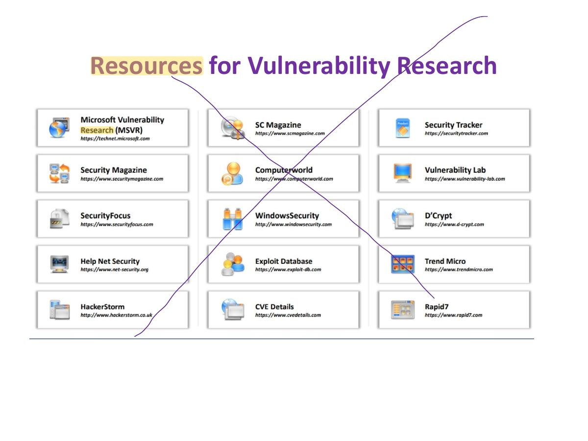
Exam weight ●○○ Low
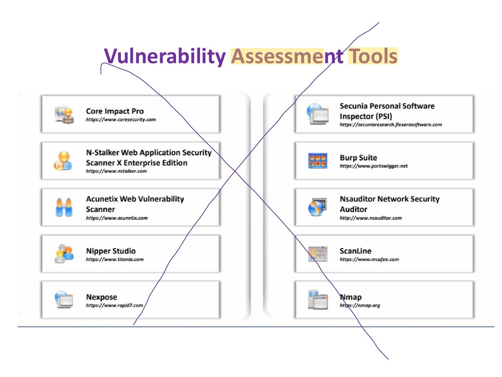
Exam weight ●○○ Low
- Tools: Nessus, OpenVAS, Qualys, Nexpose, Nikto (web).
No slides match this filter.